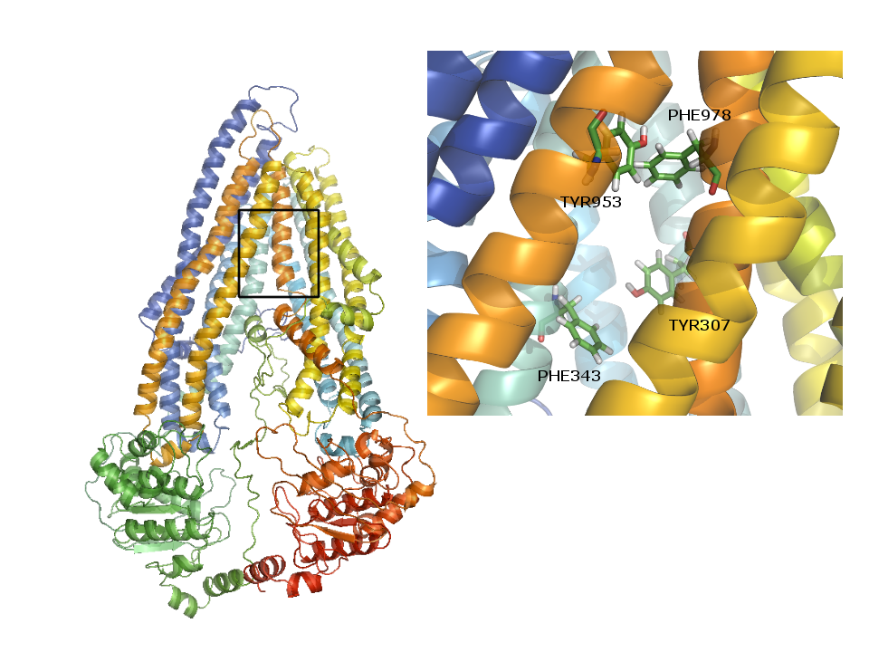
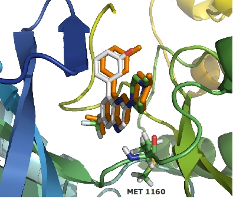
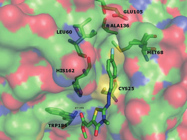

Artículos científicos
Docking applied to the prediction of the affinity of compounds to P-Glycoprotein.
Pablo Hernán Palestro, Luciana Gavernet, Guillermina Lucia Estiu, Luis E. Bruno-Blanch
BioMed Research International (en prensa)
P-Glycoprotein (P-gp) is involved in the transport of xenobiotic compounds and responsible for the decrease of the drug accumulation in multi drug-resistant cells. In this investigation we compare several docking algorithms in order to find the conditions that are able to discriminate P-gp binders and non-binders. We built a comprehensive data set of binders and non-binders based on a careful analysis of the experimental data available in the literature, trying to overcome the discrepancy noticeable in the experimental results. We found that Autodock Vina flexible docking is the best choice for the tested options. The results will be useful to filter virtual screening results in the rational design of new drugs that are not expected to be expelled by P-gp
Inhibition pattern of sulfamide-related compounds in binding to carbonic anhydrase isoforms I, II, VII, XII and XIV.
Luciana Gavernet, José L Gonzalez Funes, Pablo H Palestro, Luis E Bruno Blanch, Guillermina L Estiu, Alfonso Maresca, Ivana Barrios, Claudiu T Supuran
Bioorganic & medicinal chemistry. Volume 21, Issue 6, 15 March 2013, Pages 1410–1418
DOI:10.1016/j.bmc.2012.10.048
A set of sulfamides and sulfamates were synthesized and tested against several isoforms of carbonic anhydrase: CA I, CA II, CA VII, CA XII and CA XIV. The biological assays showed a broad range of inhibitory activity, and interesting results were found for several compounds in terms of activity (K(i) <1μm) and selectivity: some aromatic sulfamides are active against CA I, CA II and/or CA VII; while they are less active in CA XII and CA XIV. On the other hand, bulky sulfamides are selective to CA VII. To understand the origin of the different inhibitory activity against each isozyme we used molecular modeling techniques such as docking and molecular dynamic simulations.
Several new diverse anticonvulsant agents discovered in a virtual screening campaign aimed at novel antiepileptic drugs to treat refractory epilepsy.
Mauricio Emiliano Di Ianni, Andrea Verónica Enrique, Pablo Palestro, Luciana Gavernet, Alan Talevi, Luis E Bruno-Blanch
Journal of Chemical Information and Modeling. 2012, 52 (12), pp 3325–3330
DOI:10.1021/ci300423q

A virtual screening campaign was conducted in order to discover new anticonvulsant drug candidates for the treatment of refractory epilepsy. To this purpose, a topological discriminant function to identify antiMES drugs and a sequential filtering methodology to discriminate P-glycoprotein substrates and non-substrates were jointly applied to ZINC 5 and DrugBank databases. The virtual filters combine an ensemble of 2D-QSAR models and docking simulations. In the light of the results ten structurally diverse compounds were acquired and tested in animal models of seizure and the rotorod test. All ten candidates showed some level of protection against MES test.
Docking Applied to the Study of Inhibitors of c-Met Kinase
Luciana Gavernet, Pablo Hernan Palestro, Luis Bruno-Blanch
International Scholarly Research Network Physical Chemistry.Volume 2012, Article ID 391897, 5 pages. 2012
DOI: 10.5402/2012/391897

Quinoxaline derivatives were studied as inhibitors of c-Met kinase, a receptor associated with high tumor grade and poor prognosis in a number of human cancers. In this paper we used docking methodologies to predict the binding conformation of a set of quinoxalines and to explain the differences of biological activities previously reported.
Synthesis of 2-hydrazolyl-4-thiazolidinones based on multicomponent reactions and biological evaluation against Trypanosoma Cruzi.
Chiara Pizzo, Cecilia Saiz, Alan Talevi, Luciana Gavernet, Pablo Palestro, Carolina Bellera, Luis Bruno Blanch, Diego Benítez, Juan J Cazzulo, Agustina Chidichimo, Peter Wipf, S Graciela Mahler
Chemical Biology & Drug Design. 2011; 77 (3): 166-72.
DOI: 10.1111/j.1747-0285.2010.01071.x

A series of 18 novel 2-hydrazolyl-4-thiazolidinones-5-carboxylic acids, amides and 5,6-α,β-unsaturated esters were synthesized, and their in vitro activity on cruzipain and T. cruzi epimastigotes was determined. Some agents show activity at 37 μm concentration in the enzyme assay. Computational tools and docking were used to correlate the biological response with the physicochemical parameters of the compounds and their cruzipain inhibitory effects.
Divulgación